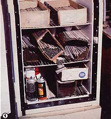
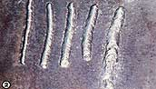
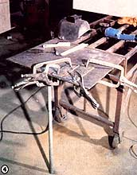
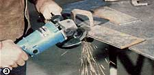
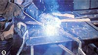
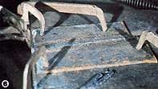
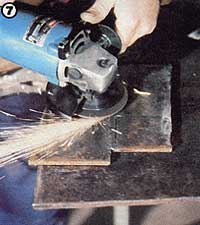
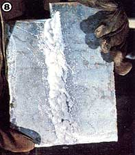
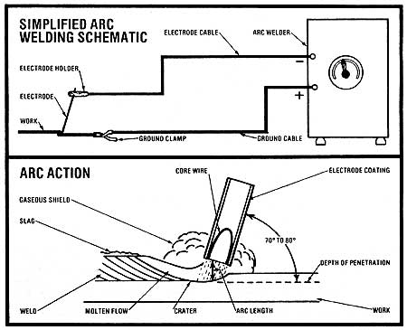

Here's an introduction to a useful-and marketable-skill that anybody can acquire.
Terry Krautwurst
In his article "Weld It Yourself . . . and Make a Few Bucks to Boot" (MOTHER NO. 72, page 130), Adrian B. DeBee gave readers an admirably thorough explanation of the basic tools and materials required to perform simple arc welding . . . and he suggested a number of ways to make money with the skill, too.
Well, now that you know the what and the why of the subject, it's time to get to the heart of the matter: how to weld. And even though it's true that professional tradespeople spend years honing their skills to a high degree of technical proficiency, it's just as true that you as an everyday do-it-yourselfer- can pick up all the fundamental techniques you're ever likely to need in just a couple of afternoons!
READY, SET. . .
OK, let's say you've read last issue's article and followed Adrian's advice pretty much to the letter. You've bought yourself a good 230-volt AC "buzz box" (or a comparable machine) . . . you've gathered together all the other necessities: a head shield ( and goggles to wear underneath, to protect your eyes from sparks and chips even when your face plate is raised), gauntlet gloves, a heavy natural-fiber or leather jacket and cap, and rubber-soled boots . . . and you've prepared a clean, well-ventilated, dry work area.
While we're at it, let's assume that you've also bought a supply of E6011 and/or E6013 all-purpose mild-steel electrodes . . . probably a few pounds each of 1/8"- and 5/32"-diameter rods, for use with metal 1/8" thick or more, will be all you'll need for now. (It's important to prevent the rods from absorbing humidity, so keep them dry.)
Finally, we'll figure that-to round out your materials supply-you've gone to a local metals outlet and bought a pile of flat steel scrap in varying thicknesses (anything from 1/8" to 3/8" is good for practice) for about a nickel a pound. (When you're done with the material, you should be able to sell it back to a salvage dealer for about 3 cents a pound! )
. . . GO! Position a piece of steel plate on your work surface and-since you'll be practicing with metal of around 1/4" in thickness-place a 1/8" rod in the grooves of the electrode holder, and set your machine's amperage to around 90 or 100. Connect the ground cable to the work piece, but be sure it's positioned far enough away so that it won't interfere with your weld. Or, if the steel is on a conductive surface (such as the angle-iron table shown in the photos), simply clamp the wire close to the work. Then-keeping the electrode well away from any metal-turn the machine on.
Now, you're ready to strike the arc. Put your face shield down and warn others around you not to stare at the bright light no matter what. OK. Go ahead and start the arc by holding the rod about 20° from vertical and lightly scratching the tip of the electrode across about an inch of the area to be welded, drawing the rod toward you and then quickly raising its tip to about 1/4 inch above the metal.
What should happen is that-as a result of scratching the protective flux from the end of the electrode-current will flow through the rod, leap across the gap, and form an extremely hot (6500°F) electric arc that melts both the end of the wand and the metal being welded. Because of the magnetic forces set in motion, the molten metal from the electrode travels across the arc and is deposited on the steel, mingling with that metal to form a weld.
Unfortunately, what will happen the first few times you try to strike an arc is what's called "freezing": You won't lift the tip of the rod quite quickly enough, and the danged thing will stick and try to weld itself to the metal. A good strong twist should free the electrode . . . but if that doesn't work, turn the machine off , release the rod from its holder, and-after it has cooled somewhat-wiggle the stick free from the steel, or knock it with a hammer, and start over. (It's likely that you will have to try again and again-"freezing" can be absolutely maddening for the beginner-but sooner or later you'll develop a smooth flick-of-the-wrist motion similar to striking a match, and you'll suddenly wonder why you ever found the process difficult.)
1] A well-sealed, but inoperable, junk refrigerator-equipped with a 120-volt thermostat rigged to a 150-watt bulb-makes a nice low-humidity electrode storage bin. The control is set at 95°. [2] These beads demonstrate, from left to right, the results of too-cold through too-hot fusion. The fourth-and best-weld penetrated well and "puddled" rather than "stacked up". [3] Beveled joint edges on thick steel improve the bond. [4] Clamp the work tightly to your bench (the welding table shown will be featured in a future issue). [5] Arcing and . . . [6] the completed weld. [7] Final grinding smooths the metal for . . . [8] a perfect joint!
EXERCISE NO. 1: LAYING A BEAD
Once you've struck an arc-and are consistently able to hold the stick close enough to the metal's surface to maintain the circuit-the intense heat and flow of molten material will continue until the rod is used up. But before you can expect to put this action to work to join two pieces of metal, you must learn to control the flow/fusion process . . . to the point where you can produce a symmetrical, deeply penetrating weld.
Developing this bit of eye-hand coordination can, unfortunately, be somewhat like learning to walk a tightrope on roller skates in a wind, because the quality of the bead you produce will depend on how well you balance three important factors: [1] the amperage setting, [2] the length of arc, and [3] the speed at which you move the electrode (known as "rate of travel").
The amperage setting required will depend mainly on the thickness and type of metal you want to weld, and on the size of the electrode used to do the job. (The owner's manual with your machine will likely include a table of recommended rod sizes for given metal thicknesses.) For now, though, let's stick with our approximately 1/4" steel and a 1/8" rod . . . in which case an amperage setting of between 85 and 115 will be appropriate.
(Start at a setting of 90 amps and then adjust up or down as you observe the results of each bead.) Now, strike an arc (your face mask is down, right?) and hold the electrode so that it leans toward you at an angle of about 70 to 80° to the work. Starting at the edge of the piece farthest from you, draw the electrode back toward your body. Don't try any side-to-side movement for now . . . just pull the rod back in a straight line, evenly and steadily: not too fast (speed will cause you to produce a weld that's shallow and too narrow) and not too slow (the material will pile up and ripple excessively in such a case). By looking closely, you'll be able to see a crater forming in the metal at the end of the arc . . . try to keep the flow of material into the back of that cavity smooth and consistent.
Of course, while you're doing your best to control the rate of travel, another complication is taking place: Your welding rod is melting, and-as a result-the length of your arc is getting longer. So while you're pulling the electrode toward you, you must also continually push the tip gradually forward to compensate for the rod's ever-decreasing length.
As a general rule of thumb, try to keep arc distance equal to the diameter of the electrode being used. When the gap is correct, you'll hear a "crackling" sound . . . but when the arc is too long, you'll hear a hollow, blowing noise. So try to develop an ear, as well as an eye and a feel, for arc length. Once you've completed a pass, let the fresh weld cool from red-hot to black, then use a chipping hammer to knock off the thin outer crust of slag. Underneath will be . . . well, anything from a disappointing mass of pits and bubbles to an attractive, evenly distributed, deep, strong weld. The ideal bead is about 1-1/2 to 2 times as wide as the diameter of the electrode, and as long as the amount of rod used.
You can't expect to get a perfect specimen, of course, until you've had quite a bit of practice . . . so keep at it, experiment with amp settings and arc distances and travel speed-try your hand at moving the electrode from side to side in a close zigzag or circular motion, too and analyze each bead's appearance. If you make an honest effort to be your own worst critic, you'll be able to detect what you're doing wrong, and correct it. Photo 2, showing beads formed on amperage settings ranging from too low (cold) to too high (hot) should help, but here are some other things to look for.
Slag pockets: black, nonmetallic deposits in the weld. Try keeping the electrode movement steady . . . and hold the rod at an angle closer to perpendicular.
Undercutting: a shallow groove along one or both sides of a weld. This usually results from moving the electrode too fast. Slow down a little.
Spatter: droplets of metal around the weld. It isn't a serious problem, but-if adjusting amperage doesn't cure it-you may be holding the electrode too high.
EXERCISE NO. 2: A BUTT WELD
Now that you're running beautiful beads consistently (well, almost), you're ready to start actually joining two pieces of metal. Again, we'll use 1/4" steel (be sure the edges to be fused are square) . . . and 1/8" rod. If you happen to have two pieces that are more than 1/4", you should probably bevel the top edges, as we've shown in Photo 3, to about 45° . . . to assure a deep bond.
In any case, position the two sides so that they almost, but don't quite, touch (to allow for expansion) . . . and clamp there down securely. Because of the tremendous heat applied during welding and the stresses created by the variations in temperature along the seam as the work progresses and later cools-the fresh weld and any adjacent metal are especially subject to distortion. Therefore, if the plates are allowed to move, the steel will often twist away from the joint, and/or the electrode material will crack. Clamping the pieces is the easiest way to minimize the effects of these forces, though a "tack weld"-just a good, penetrating 1/4" dot of metal placed at both ends of the joint, and used in addition to the clamps, will assure a positive bond.
Now, set your machine to about 115 amps and strike an arc. Start the weld at the top of the plates and draw it toward you . . . but this time, hold the rod nearly perpendicular and move the stick side to side in a tight "Z" pattern. If you're using an E6011 electrode-which penetrates a bit more deeply than does an E6013-you may also want to keep the arc length somewhat higher than the rule-of-thumb 1/8".,At the end of the run, raise the wand about 1/4 inch and hold it there briefly to allow the cavity in the final half-inch or so of the weld to fill with metal.
Let the work cool for a minute, then knock off the slag. Ideally, you should have a weld that penetrates into the seam, both horizontally and vertically, about 1/8 inch. The surface of the fresh metal should be only slightly convex.
If you're satisfied with your results, smooth the work with a hand grinder to give it the appearance you'd want for, say, a box stove (see Photos 7 and 8). On the other hand, if the weld is poor, you may want to break it open-by twisting the pieces in a vise or hammering them-to get a closer look at the results of your efforts. Is fusion complete all along the seam? Are there slag pockets? Keep a critical eye out for weaknesses in the work . . . and be prepared to practice correcting them.
On subsequent runs, you may want to try welding both sides of the plates . . . or attempt to apply a second layer over the first (clean the initial seam's slag off completely, then use a wide but close zigzag-or crescent or figure-eight-motion to cover the first weld). Remember . . . the more you experiment, the more you'll learn.
EXERCISE NO. 3: A TEE WELD
Now, you're ready to try to join a horizontal 1/4" steel plate to a vertical, perpendicular one. You can use clamps and a length of angle iron to keep the pieces positioned . . . or, better yet, simply lay a small tack weld on both sides of each end of the vertical plate, to hold the members in place.
Since we're only practicing tee-weld technique, 1/8" rod should be sufficient . . . but because more filler material is required here than for a simple butt joint, a 5/32" electrode (again, either E6011 or E6013) would be even better.
When using the smaller wand, you'll need to slow your rate of travel in order to build up sufficient metal in the joint . . . but the decreased speed will cause increased heat and-therefore-a higher possibility of metal distortion. So if you have the larger-size electrode available, or if you're working on a "for real" project, 5/32" is the way to go.
Set your machine for about 130 amps and strike an arc. Now, hold the rod so that it bisects the 90° angle formed by the two pieces (in other words, so that it's 45° from vertical) but leans at an angle of about 80° out from the corner where you intend to start the weld. Point the tip of the electrode in the direction of travel . . . aim the arc directly at the juncture of the two plates . . . and use a forward, oscillating, circular motion to bring the weld metal up and into either side of the seam. Keep your work as even as possible, and be sure to build sufficient material all along both the vertical and horizontal planes.
When the weld has cooled, examine the seam . . . chances are you'll be looking at real messes after your first few attempts. (Undercutting is a common problem with tee welds . . . to correct it, try increasing or decreasing arc length, or reducing travel speed or amperage.) Be sure to break the weld with a hammer to get a closer look at the degree of penetration. If it isn't deep enough, try, try again. You'll get it right (eventually).
IS THAT ALL THERE IS TO IT?
Well, the answer to that question is yes . . . and no. You will be able to handle most simple projects once you've perfected the fundamentals outlined here, but this article does not tell you everything there is to learn. There are dozens of types of welds, literally hundreds of kinds of electrodes for various purposes, and scores of special procedures. And your arc machine can do more than just weld . . . it can cut (not as smoothly as an oxyacetylene outfit, but you can grind the edges after cutting, to get an acceptable surface) . . . it can be used to thaw frozen pipes . . . and-with the proper attachments-it can even braze and solder.
Of course, learning to weld is like learning to do almost anything: The best way is just to do it. Concentrate on the basics until you really have them perfected. And naturally, if you know someone who welds-or have access to an adult education or technical school course of some kind-you're sure to benefit from face-to-face instruction.
The key is practice . . . and as soon as you've perfected your skills sufficiently, you can even get paid while you learn . . . by making simple-but salable-items such as flowerpot stands and the like.
Before long, you'll be saving-and making-money as a bona fide welder!
EDITOR'S NOTE: Several manufacturers have put together some excellent publications that should be instructive to both the novice and the experienced welder. For a catalog of available books and manuals, with prices, write to John Deere Service Publications, Dept. TMEN, John Deere Road, Moline, Illinois 61265 . . . or to the Lincoln Electric Company, Book Division, Dept. TMEN, 22801 St. Clair Avenue, Cleveland, Ohio 44117. The latter firm also sponsors the James F. Lincoln Arc Welding Foundation (Dept. TMEN, P.O. Box 17035, Cleveland, Ohio 44117), which offers a work program, a variety of learning aids, and financial assistance to qualified professional welding students.
|
 |
 |
 |
|
 |
 |
 |
|
 |
 |
 |